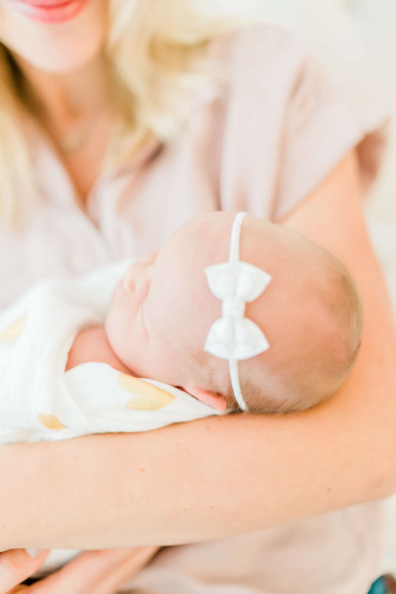
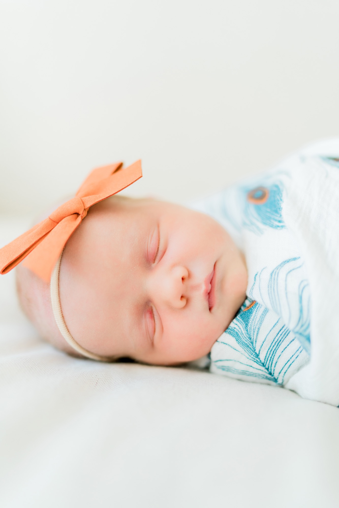
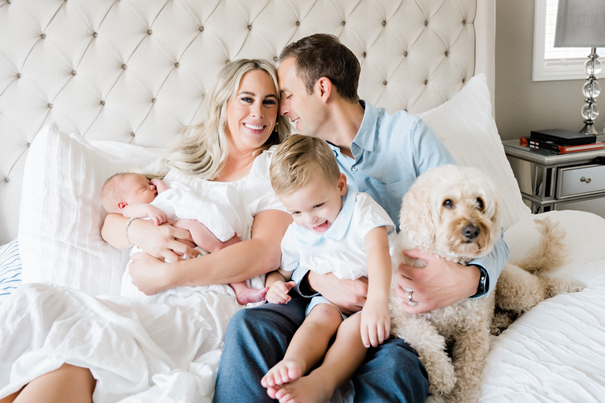

You made a whole person. And now you are tired, a little wide-eyed, and somewhere in the middle of the most tender season you will ever live through.
I am so glad you want to remember it. I have been photographing families here in Las Vegas for more than eighteen years, and I have watched babies I photographed in their first week of life grow up and come back for their senior portraits. That is the part I love most.
These early days feel endless when you are in them, and then suddenly they are gone. A photograph is how you hold onto them.
My style is simple and unposed. I am not going to bend your baby into shapes or fill the room with props. I want the real thing. The way she curls into your chest. The way your toddler wants to kiss the baby and then immediately wants a snack. The quiet, the chaos, the love. All of it.
I cannot wait to meet your newest love.

Less a photoshoot, more a slow, soft morning at home, with me quietly capturing it.
Most of our session happens right where life happens. Your bed, the nursery, the cozy corner with the good light. You will hold your baby, snuggle in close, change a diaper, maybe feed her. I will be moving around you, catching the real moments as they unfold.
The sweet spot is the first few weeks. Reading this a little later? Do not panic.

The classic newborn window is the first two to three weeks. Babies this young are extra sleepy and still curl up in that snug, fresh-from-the-womb way. They tend to snooze right through the session, which makes for those dreamy, peaceful images.
Already past three weeks? You are still right on time. Because my style is lifestyle and not heavily posed, slightly older newborns photograph beautifully. An alert, awake baby looking around is just as precious as a sleepy one, and we lean into whoever your baby is that day.
If you book before baby arrives, we pencil in a tentative date and stay flexible. Newborns keep their own calendars. Once your little one is here, we lock in the day and time that works best around feeding and sleep. No stress, ever.
Mid-morning to midday, when natural light through your windows is at its softest. I will help you choose the right time once I know your home.
Please do not deep clean your whole house. We only need a couple of rooms.
The spaces I use most are the primary bedroom, the nursery, and a living room with good natural light. Pick the rooms that feel best to you, and we will work there.
Less is more. A simple, decluttered space lets the focus stay where it belongs — on your family. A little mess in the next room is none of the camera's business.
Soft, neutral, comfortable. When everyone coordinates without matching, photos feel timeless.
Wear something that feels good on a fresh postpartum body. You will be seated and snuggling, so choose what feels comfortable both sitting and standing. Creams, whites, soft neutrals, muted tones. A relaxed dress or a simple top with a cardigan. Wear what makes you feel like you.
A plain tee, henley, or button-up in a complementary neutral, paired with jeans or chinos. Skip the logos and busy prints.
Keep it in the same soft, neutral family. Simple tees, sweaters, dresses, and rompers all photograph beautifully. This is not the day for itchy or fussy outfits.
A plain onesie, a neutral romper, a soft knit, or just a swaddle and a diaper. Avoid bright reds, greens, and hot pinks — they cast color onto baby's skin. Make sure outfits fit so they don't swallow tiny hands and feet.
The more relaxed you are, the better the photos. Babies feel everything you feel.
Every baby has them. If your little one needs to eat, cry, or be cuddled, we pause. Some of my favorite images come right after a feeding, when baby is milk-drunk and dreamy. We never rush a newborn.
Once we wrap, you go back to those newborn snuggles. I do the rest.
I hand-edit your images in my signature warm, natural style and deliver them in a beautiful online gallery you can view, download, and share. You will receive a sneak peek soon after our session so you have something to hold onto right away.
Full galleries are typically ready within about ten days. Newborns change so fast, so I make your images a priority.
These are the photos you will want on your walls and in your hands, not just on a screen. Your gallery includes a simple way to order professional prints, albums, and keepsakes. I am always happy to help you choose.
And this is just the beginning. I would love to be the one who photographs this little one through every milestone — the sitter session, the first birthday, all the way to senior portraits one day.

You will blink and she will be grown. Let's freeze this season exactly as it is — soft, sleepy, and full of love.